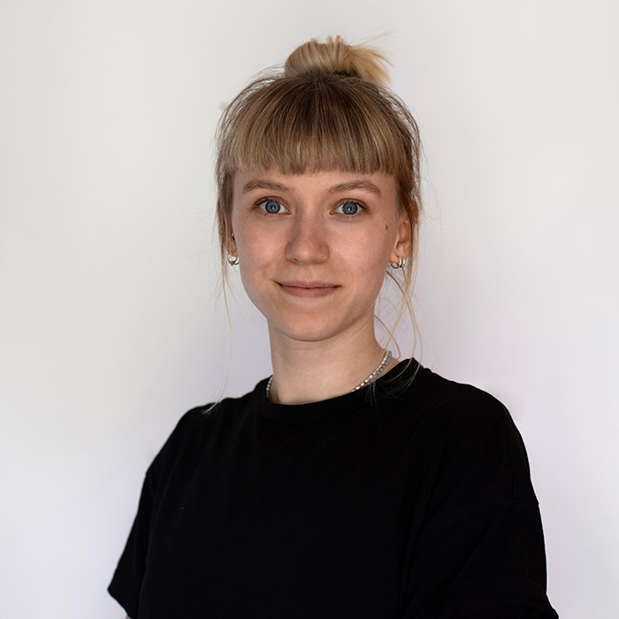
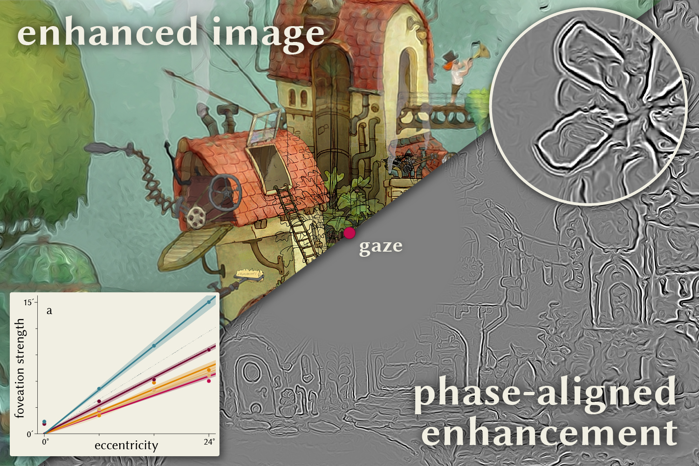
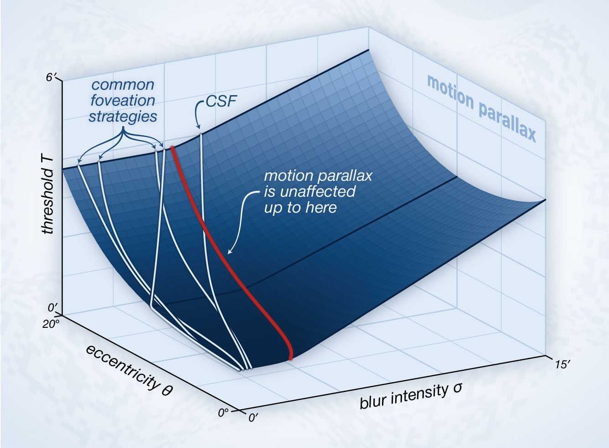
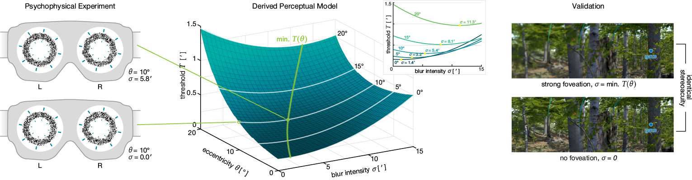
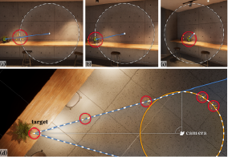
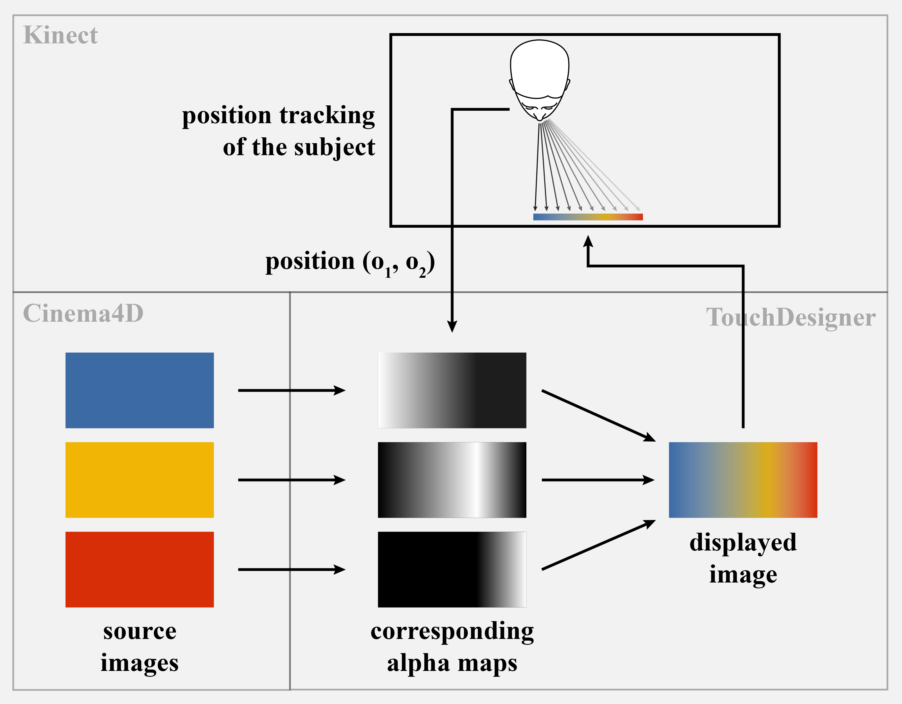
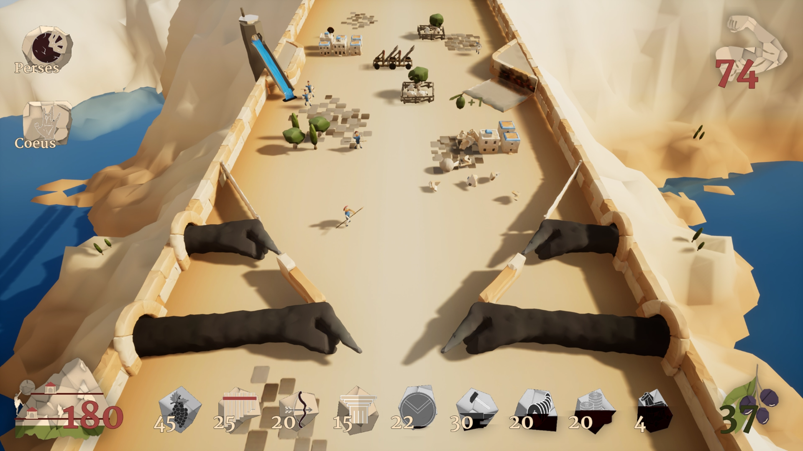
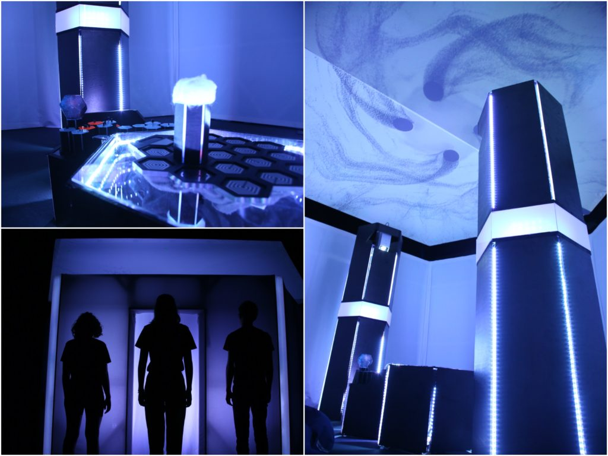

I am a PhD student under the supervision of Prof. Piotr Didyk at Università della Svizzera italiana in Lugano, Switzerland. Currently I am interning at Meta Reality Labs under the supervision of Alex Chapiro. My research interest lies in the quantification of human vision, and the manipulation of images for improved perceptual quality and efficient rendering, especially for AR/VR displays.

I am a PhD student under the supervision of Prof. Piotr Didyk at Università della Svizzera italiana in Lugano, Switzerland. Currently I am interning at Meta Reality Labs under the supervision of Alex Chapiro. My research interest lies in the quantification of human vision, and the manipulation of images for improved perceptual quality and efficient rendering, especially for AR/VR displays.

ACM SIGGRAPH 2026
We present a method for enhancing the perceived quality of foveated images by extrapolating local image statistics, such as intensity, orientation and especially phase, from coarse to fine scales. In particular, we demonstrate that correct phase alignment across space and scales is crucial for achieving perceptually convincing image quality.

IS&T Electronic Imaging (Human Vision and Electronic Imaging) 2026
🏅 Best Student Paper Award
We examine the impact of blur on the depth perceived by motion parallax and evaluate the findings in comparison to our previous findings on the impact of blur on stereoacuity.

ACM SIGGRAPH 2025
We demonstrate that stereoacuity is remarkably resilient to foveated rendering and remains unaffected with up to 2× stronger foveation than commonly used. To this end, we design a psychovisual experiment and derive a simple perceptual model that determines the amount of foveation that does not affect stereoacuity.

ACM Mensch und Computer 2024
🏅 Best Paper Award (Honorable Mention)
We extend the gaze guidance technique HiveFive to guide users to out-of-FOV targets. Our technique is qualitatively and quantitatively evaluated in two user studies. Our results show that HiveFive360 is effective in guiding users to a target object, and diegetic, meaning that the scenic immersion of the scene is preserved.

IS&T Electronic Imaging (Stereoscopic Displays & Applications) 2023
We show that the viewing experience of a multiview screen increases logarithmically with the presented number of views. This rise stagnates at around 0.25° per view. Below 0.5° per view, participants prefer a common 2D display.

Game Development, Winter 2021
Flippyphos is a round based roguelike pinball game that keeps the basic pinball elements, such as targets, bumpers, ejects and slingshots. In 'Flippyphos', the person playing helps Sisyphos to finally roll the boulder up the mountain, by abstractly controlling Sisyphos' fingers.

Studio Production Event Media, Summer 2020
We are dreaming. Dreams are a way to our subconscious, they are unsteady. Somnium ‐ Modular Dreams presents an interactive media installation that displays our dream visually, audibly, with atmosphere, and with light. It was honored at the 2021 Talent Award of ADC, and was finalist of the CommAwards 2021.